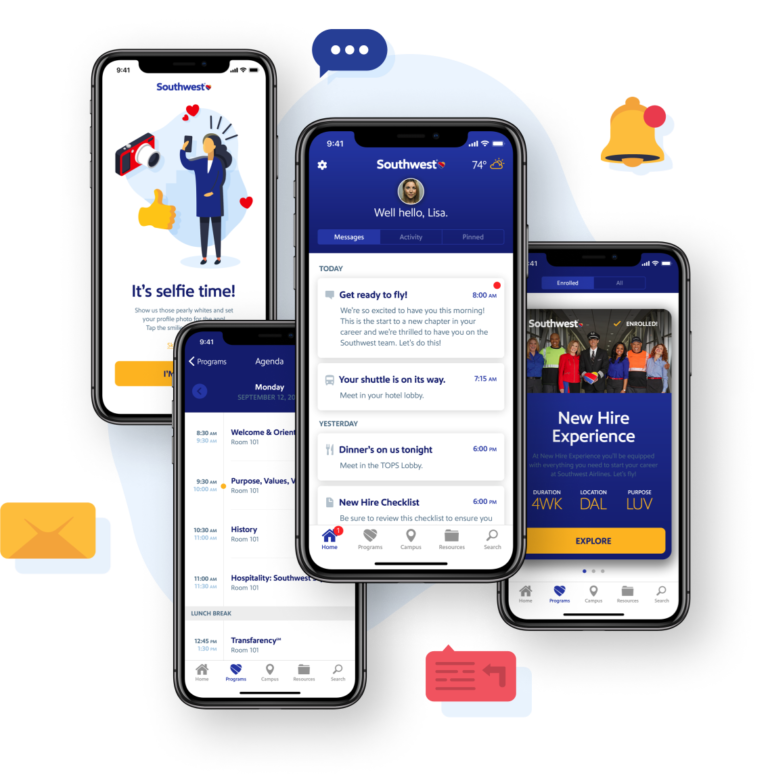
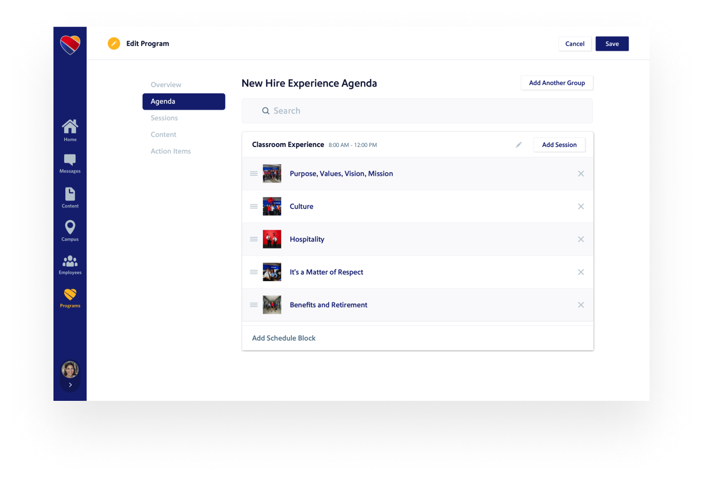
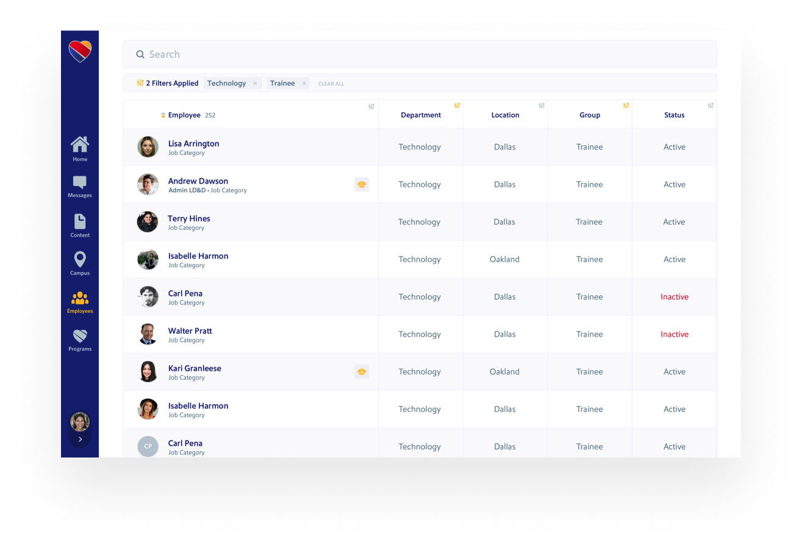
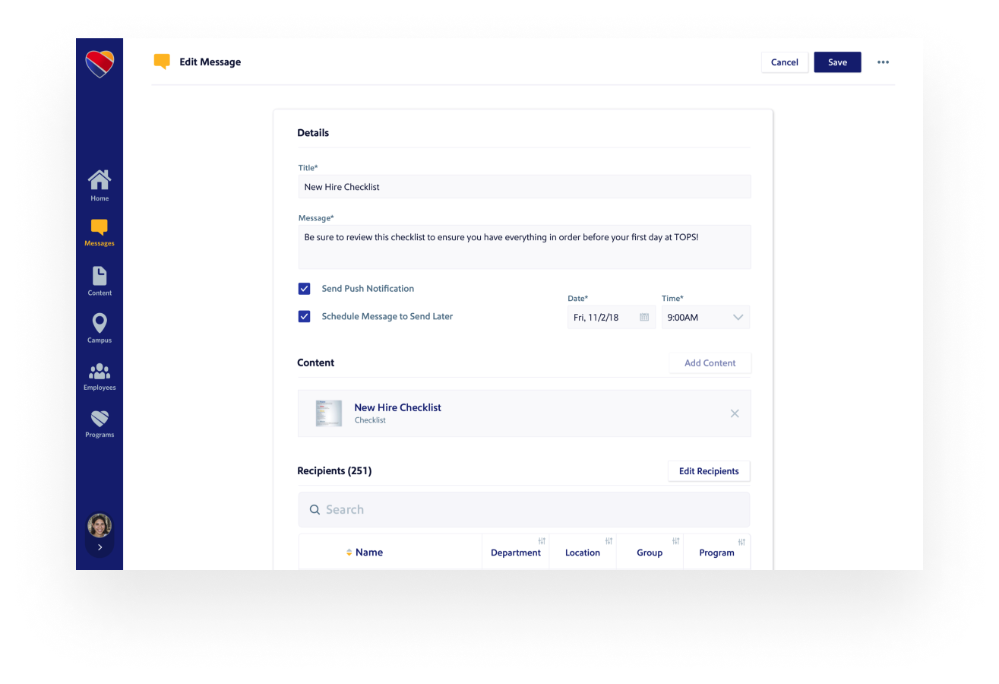

Southwest Airlines Onboarding App
Southwest Airlines is well-known for its excellent customer service. However, the company realized that their new hire experience didn't match the high standards of their flight experience. To address this issue, Southwest's learning team created a companion app to help make the unfamiliar more familiar for all new hires. This app is designed to provide new employees with information about Southwest's culture and how they can deliver exceptional customer service.
There's nothing quite like using a great app to make you feel on top of the world.
Design is a critical part of any new hire experience, and we're excited to be working with Southwest on their upcoming app. We're committed to creating a high-quality, thoughtful experience that will be both modern and user-friendly.
The SWA U app is designed to provide a personalized experience for users. Upon sign in, users are greeted by the app and asked to take a selfie to set up their profile. The onboarding schedule is based on the user's role, providing them with a few reminders about how the app was tailored specifically for them.
The app is easy to use and navigate, which makes flying with Southwest a breeze. There are no complicated procedures or processes to remember, so you can focus on enjoying your flight. Plus, the user interface is sleek and modern, providing a great experience overall.
The SWA U app is actually helpful! Why else would learners keep coming back to the app again and again throughout onboarding? This companion app reduces stress and makes every learner’s experience more enjoyable.
Customer Service Always Comes First
Southwest Airlines has an iconic brand that is known for its low fares and stellar customer service. When we created the companion app for new hires, we wanted to make sure that it was consistent with the Southwest brand. We took into account every detail, from the color to the tone of voice. The result is an app that feels like a natural extension of Southwest Airlines.
BYOD (Bring Your Own Device Environment)
The Southwest companion app is a great resource for employees. It provides access to transportation details, hotel accommodations, interactive campus maps, and directions to the nearest bathroom or cup of coffee. This app is a great tool for new hires who want to make the most out of their working day.
Integration with current systems is not something to take lightly. It significantly impacts the admin experience and the time spent updating and maintaining the app. We made an app that not only cooperates with Southwest’s established technology, but that complements it. Our team worked closely with IT to ensure a smooth rollout and educate users about how our app works within their existing infrastructure. This ensures a successful adoption of our product and sets up their team for future success in managing it.
The admin experience is critical for any organization, and it's especially important when it comes to managing a new hire. That's why we've made our system simple and easy to update, with tools that allow admins to manage content, users, classes, on-campus maps, and app analytics with just a few clicks. It's completely self-service through an intuitive and beautiful experience.

